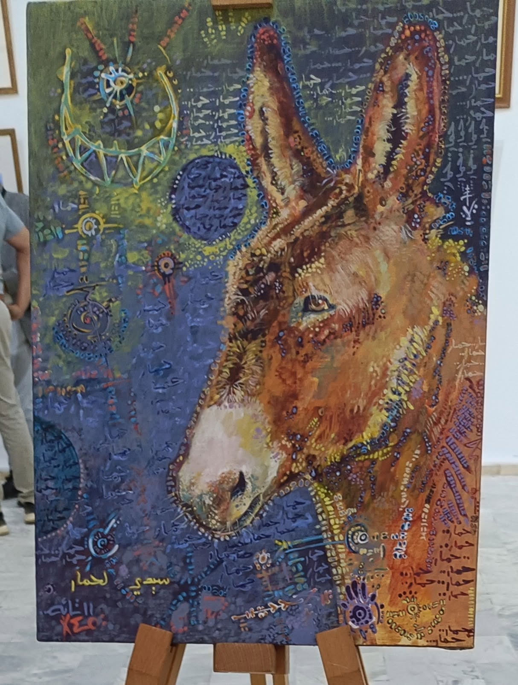

L’âne aux signes d’étoiles
Sous la peau rousse
de l’âne,
des galaxies
écrivent leur langage.
Chaque poil,
une phrase oubliée,
chaque regard,
une prière cosmique.
Il écoute —
le monde bruit,
les hommes parlent
trop fort,
mais lui connaît
le murmure ancien
des pierres,
du vent,
de la poussière qui pense.
Sur son front
dansent des symboles,
tracés
comme des éclats de rêve,
entre rire
et mystère.
Est-ce un sort,
une chanson,
une mémoire ?
L’âne ne dit rien.
Il porte le poids du ciel
sans plainte,
les mots des autres
sans rancune,
et dans sa patience,
il devient sage.
Autour de lui,
les couleurs tournent,
bleus d’encre,
ors brûlants,
rouges qui chantent.
C’est un univers
en marche lente,
un souffle d’humilité
peint sur l’infini.
Djamel Metref
At Yenni le 20 octobre 2025
Tableau © Khiro Djebara

← Tous les poèmes